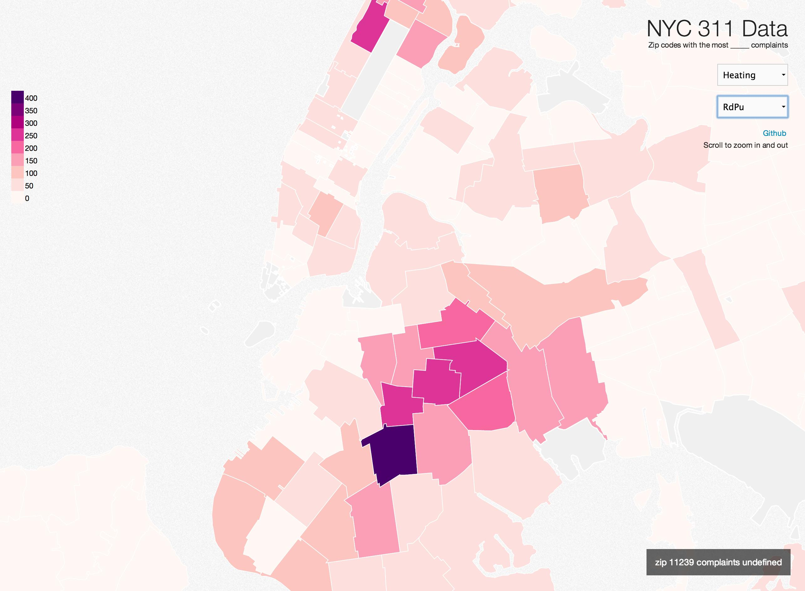
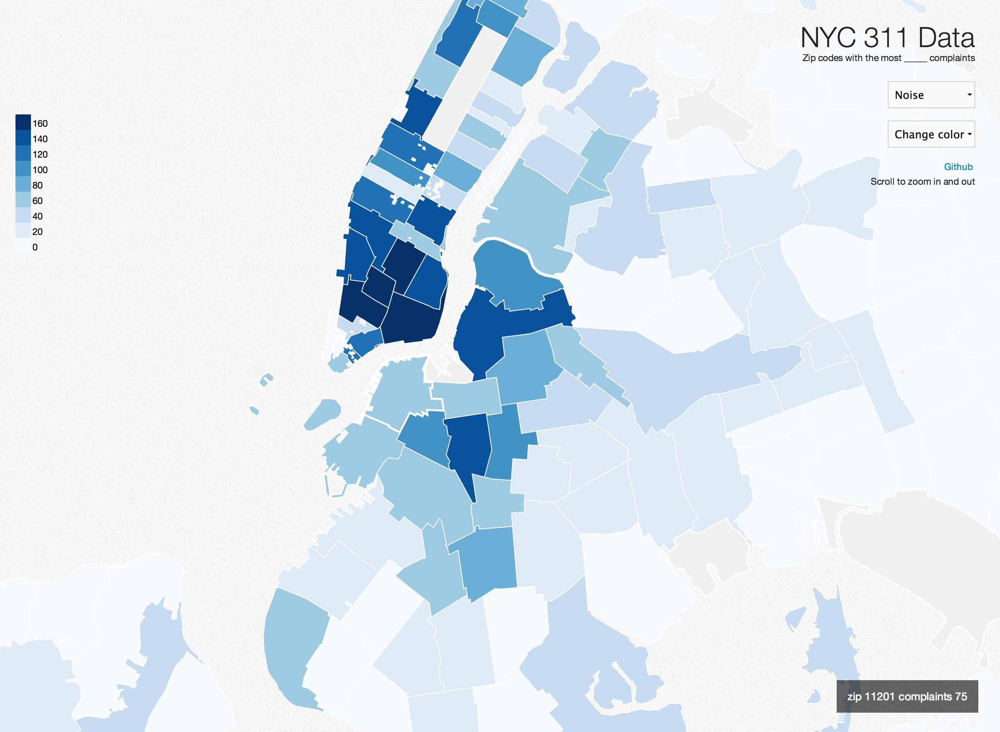
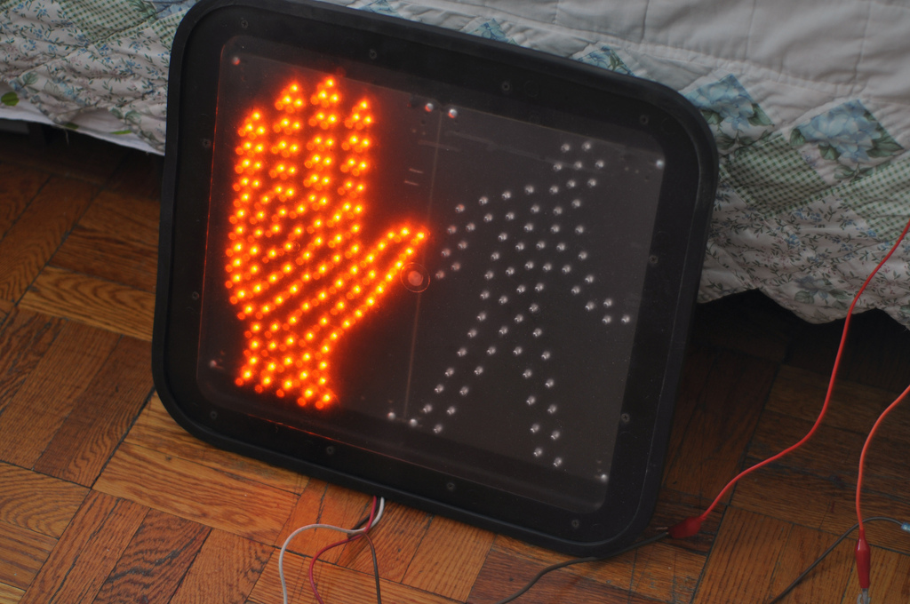
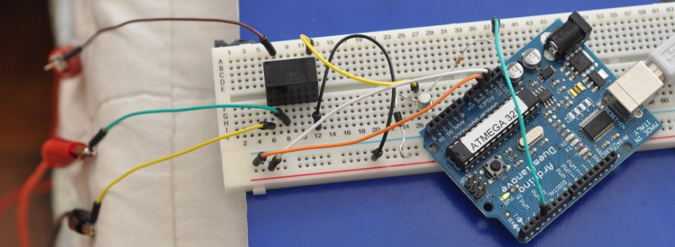

Zunayed A Morsalin
Electrical & Computer Engineer
Who I am
My name is Zunayed Ali and I grew up in Brooklyn. This is a place that lets anyone who is inclined partake in my musings of human and machine language.
What I do
After graduating college with an electrical engineering degree, I started working at a Mechanical, Electrical & Plumbing firm. I designed electrical infrastructure for large skyscrapers, hospitals, schools, and data centers. During my time as an senior electrical engineer, I started automating CAD modeling and the calculations that I performed and soon started creating small programs.
My interests have been in full stack web development, hardware prototyping and data analysis.
For fun I have been working on a robotic arm
Email - zunayed@gmail.com
-

-

D3 Choropleth of the noisiest neighborhoods in NYC
** Update - Now with heating and graffiti data
Using the information extracted from my 311 data analysis project I built a interactive map of nyc using D3.js. Flask was used to simply serve up the data files.
Github
Demo
NYC 311 Data Analysis
Analyzed NYC 311 data to look at distribution of complaints in various neighborhoods. In particular at neighborhoods with the most noise complaints in Brooklyn using ipython, numpy and pandas. The code can be viewed as an ipython notebook at the link below
Github
Demo
Billsplitr - A real time bill/check calculator
Web app that allows for a group of people to connect to a shared room and add their items. The app shows the tax and tip relative to each item that’s been added. Built using Node.js, express, socket.io and Jade for templating. Mocha & Istanbul for code coverage and testing
Github
Demo
-

-

Gmail Arduino Notifier
Sends a new mail alert using a simple python script to the arduino so you can control a relay that will switch a walk/don't walk sign
Github
blog
ForgetMeNot - Soundcloud & Youtube Favorite managment
Unfortunately when a video you have favorited in Soundcloud or youtube is deleted it gets removed from all your playlist and you are not informed. All you are left with is a very unhelpful "video deleted" message. You can imagine for someone with a fair amount of favorites it would be quite difficult to know what video/song number 56 of 240 was. Thats where ForgetMeNot comes in. Using the SoundCloud & Youtube Api to parse favorites into a Postgres database the app will automatically track each of your favorites links to make sure the links are still alive. Project is about 90% done! Tools - python, flask, postgres, sqlAlchemy and jquery
Github

Namegame
When I started Hacker School, I wanted to create a game that would help my classmates learn one another’s names. This game generates 4 random people, as well as the names of these people - the goal of the game is to match the names to the pictures. A stats page has been created so that everyone can see the percentage of people that are guessing specific names correctly. Also I have a script that extracts all the students names and profile images using beautifulsoup.
Github
Demo
Stats
Webcam Robot
Using a joystick to control a webcamera mounted on two servos. A python script interprets the joystick data and writes it serially to the arduino.
Youtube
blog